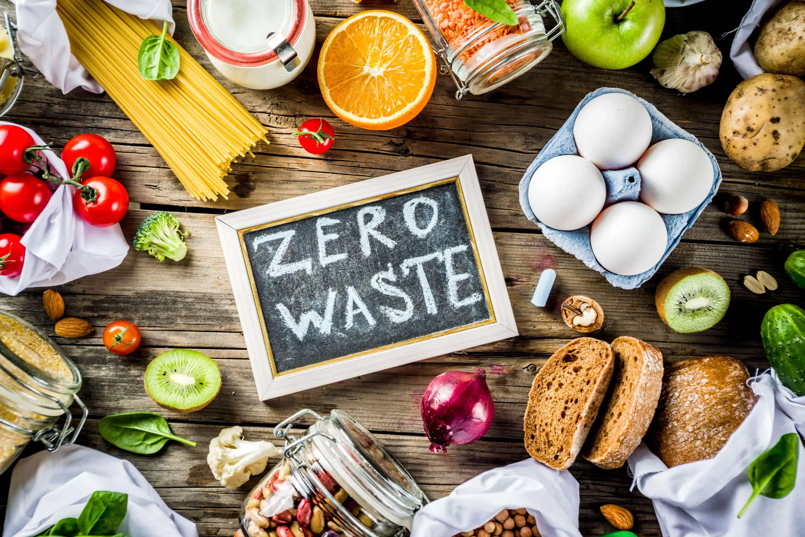

EFFECTIVE SOLUTION:
FOOD REDISTRIBUTION PROGRAMS
Преимущества компании
-
Environmentally Efficient
Redirecting food to those in need instead of landfills helps conserve resources and reduces environmental harm, making it a sustainable practice.
-
Time-Effective
Redistributing surplus food quickly and directly addresses hunger, saving time compared to other food distribution methods.
-
Cost-Effective
Food redistribution reduces the need for costly waste management, saving money for both businesses and nonprofits.
-
Improves Supply Chain Efficiency
By reallocating excess food, businesses can streamline operations and reduce inventory waste, ensuring a more efficient supply chain.
-
 Food waste is one of the leading contributors to environmental degradation, with far-reaching consequences. When food is thrown away, it doesn't just disappear; it ends up in landfills, where it decomposes anaerobically (without oxygen) and produces methane, a potent greenhouse gas. Methane is over 25 times more harmful to the climate than carbon dioxide over a 100-year period, contributing significantly to global warming. The environmental impact extends further to the entire food production process—growing, harvesting, transporting, and processing food all require water, energy, and land. When food is wasted, all these resources are squandered. For example, it is estimated that roughly 1.4 billion hectares of land, which is about 28% of the world’s agricultural land, is used to produce food that is never consumed. The carbon footprint of food waste is staggering. According to the Food and Agriculture Organization (FAO), the carbon footprint of food waste is responsible for about 8% of global greenhouse gas emissions, nearly the same amount as all the cars, trucks, planes, and ships in the world combined. This means that food waste isn't just a waste of food—it's a waste of energy, water, and labor that accelerates climate change. In countries like North Macedonia, where agriculture plays a significant role in the economy, the environmental costs of food waste are particularly concerning. Resources such as water and fertile land, vital to the country’s agricultural sector, are being used inefficiently, contributing to resource depletion and environmental degradation. Reducing food waste in North Macedonia could significantly lessen these impacts, preserving both the environment and valuable resources for future generations.
Food waste is one of the leading contributors to environmental degradation, with far-reaching consequences. When food is thrown away, it doesn't just disappear; it ends up in landfills, where it decomposes anaerobically (without oxygen) and produces methane, a potent greenhouse gas. Methane is over 25 times more harmful to the climate than carbon dioxide over a 100-year period, contributing significantly to global warming. The environmental impact extends further to the entire food production process—growing, harvesting, transporting, and processing food all require water, energy, and land. When food is wasted, all these resources are squandered. For example, it is estimated that roughly 1.4 billion hectares of land, which is about 28% of the world’s agricultural land, is used to produce food that is never consumed. The carbon footprint of food waste is staggering. According to the Food and Agriculture Organization (FAO), the carbon footprint of food waste is responsible for about 8% of global greenhouse gas emissions, nearly the same amount as all the cars, trucks, planes, and ships in the world combined. This means that food waste isn't just a waste of food—it's a waste of energy, water, and labor that accelerates climate change. In countries like North Macedonia, where agriculture plays a significant role in the economy, the environmental costs of food waste are particularly concerning. Resources such as water and fertile land, vital to the country’s agricultural sector, are being used inefficiently, contributing to resource depletion and environmental degradation. Reducing food waste in North Macedonia could significantly lessen these impacts, preserving both the environment and valuable resources for future generations. -
Social Impact of Food Waste
On the social side, food waste is closely tied to food insecurity, a growing global issue. While millions of tons of food are discarded every year, millions of people, including children, face hunger and malnutrition. Around 820 million people worldwide are affected by hunger, and about one-third of the food produced in the world goes to waste. This disparity is even more pressing in countries like North Macedonia, where food insecurity remains a concern for certain population groups. In fact, many households in North Macedonia struggle to access sufficient, nutritious food, leading to poor health outcomes, especially among children and elderly citizens. The social impact of food waste extends beyond the direct effects of hunger. Wasting food exacerbates social inequality, especially in communities where food insecurity is already high. By redistributing surplus food to charities, shelters, and local communities, food waste can be transformed into a valuable resource that helps alleviate poverty and provides sustenance to those in need. In North Macedonia, several local organizations are already working to address food insecurity through food banks and redistribution initiatives, showing that even small-scale efforts can make a significant impact in tackling hunger and poverty. Moreover, food waste is a significant burden on families, especially in lower-income communities. Not only does food waste perpetuate cycles of food insecurity, but it also places an economic strain on households. Families who are unable to access affordable and healthy food may spend more of their limited income on expensive alternatives or face health risks due to inadequate nutrition. Reducing food waste in North Macedonia can improve food access, ensure more sustainable consumption, and allow households to use their resources more effectively, ultimately benefiting the economy and public health. -
The Intersection of Environmental and Social Impact
Addressing food waste is not just about protecting the planet—it's about fostering a more equitable and sustainable society. The environmental and social impacts are deeply interconnected: food waste contributes to environmental harm while exacerbating social inequalities. By redistributing food that would otherwise go to waste, we not only help conserve natural resources but also tackle hunger and food insecurity. In countries like North Macedonia, where both food waste and food insecurity are pressing concerns, food redistribution can serve as a key solution to bridging the gap between excess and need. Efforts to reduce food waste offer an opportunity to create a more just, resilient, and sustainable food system—one where resources are used efficiently, communities are supported, and the planet is protected for future generations.